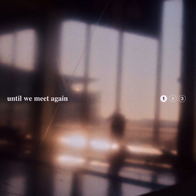
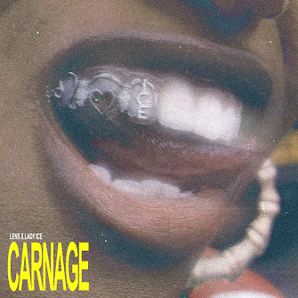
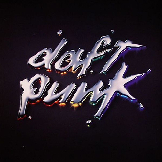

Meilleur nouvel album

Électronique, Pop
Until We Meet Again
By Jaymie Silk
Depuis 2005, Newnote propose une sélection de sorties musicales des artistes émergents les plus en vogue.
Meilleur nouvel album

Électronique, Pop
By Jaymie Silk
Meilleur nouveau morceau

Électronique, Bass
By Lens & Lady Ice
25 ans aujourd'hui

Électronique, House
By Daft Punk